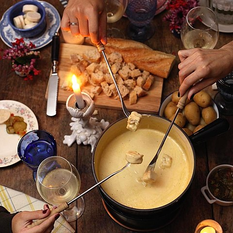

Recetas
Fondue de queso
Consiste en queso derretido servido en una olla caliente, en el que se sumergen trozos de pan u otros alimentos.
Rösti
Se elabora principalmente con patatas que suelen mezclarse con algunas grasas de origen animal.
Gerstensuppe
Sopa espesa de varias culturas europeas, consistente principalmente en cebada.